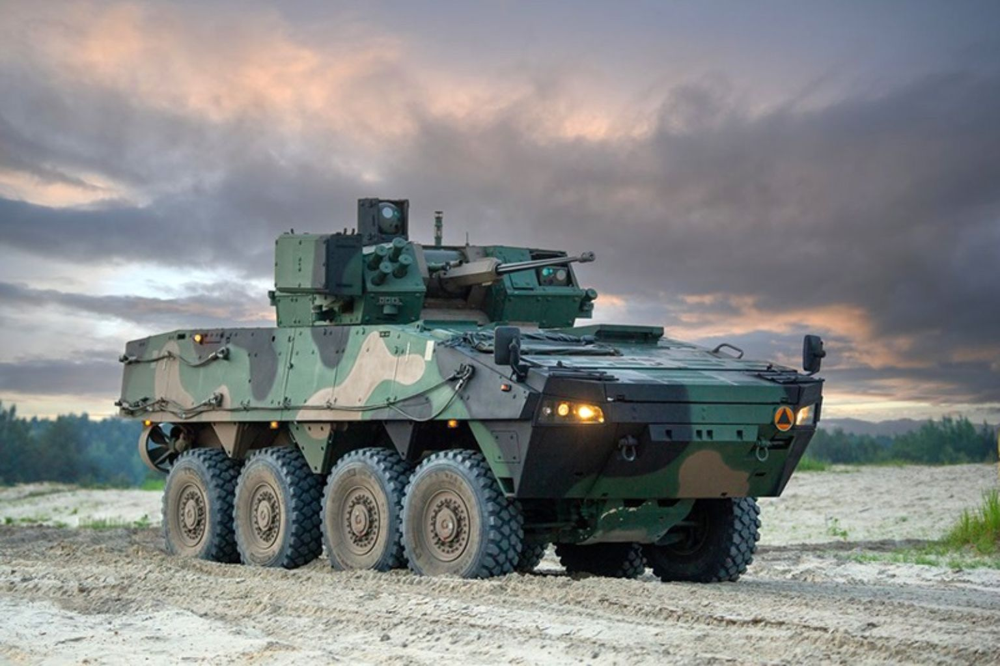

ZSSW30 Scaner
Ewidencja urządzeń i numerów seryjnych
TRYB LOKALNY


Dodaj nowy wóz
0Po otwarciu wozu rozwiń wybraną podkategorię. Podkategorie można dodawać tylko w kategoriach głównych.
Lista wozów
0 wozów▣
Nie dodano jeszcze żadnego wozu.Kopie i eksport
Dane w telefonieDane są zapisywane lokalnie w pamięci tej przeglądarki. Nie są wysyłane na serwer. Regularnie zapisuj kopię zapasową, aby przenieść ewidencję na inny telefon lub odzyskać ją po utracie danych przeglądarki.